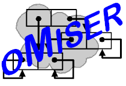

|
You are navigating the Miser Project. |
created 2002-07-25-18:58 -0700 (pdt) by orcmid
$$Author: Orcmid $
$$Date: 17-08-29 16:40 $
$$Revision: 25 $
|
 |
In computation we are profoundly tied to the finite. Useful computations require finite time, finite space, and finite resources to carry out. The material of computation consists of finite data with all manipulations tantamount to the finite operations of arithmetic, however extended over interesting material. Being chained to the finite is no more limiting than it is in logic and in human language, with its recording of finite expressions over any media: sound, print, and digital electronics.
Yet, in reasoning about computation--in having any articulated theories of computation--we bump into notions of the infinite. The theories of logic, of numbers, and certainly of mathematical functions and sets, plunge us squarely into having to account for the infinite and however it is approachable from within the finite, formal world of computation. If for no other reason than to speak of computations that approximate mathematical objects having no finite expression we must at some point introduce enough to see the chasm between the finite and the transfinite, and comprehend its crossing. And to recognize that there are more (mathematical) functions than we can express and compute involves us in establishing that we have nonetheless captured a means to realize, through computation, the most that can be expressed.
I'd meant to avoid set theory and the transfinite as long as possible in the oMiser theoretical development stage. Discussions on electronic distribution lists have shown that there must be "due diligence" on this topic from the outset. Contemporary mathematics reeks of the infinite. Without motivating the connection between the finitary realms of computation with those stellar (no cosmic) degrees of abstract thought, I am too limited in clearly situating computation relative to the reach of mathematical thought.
-- Dennis E. Hamilton
Seattle, 2002 July 25Important Note: This document is encoded in Multi-Lingual HTML using UTF-8 encoding. There is reliance on special character sets for mathematical symbols. These symbols may not render properly in your browser. The intention is to adopt the presentation model of MathML in a future version of this and other Miser Project pages that employ mathematical typography. -- dh:2002-07-25
n020701b: Embracing the Transfinite [latest]
n020701c: Initial Note
n020701a: Diary & Job Jar
|
|
|
created 2002-07-25-18:58 -0700 (pdt) by orcmid |